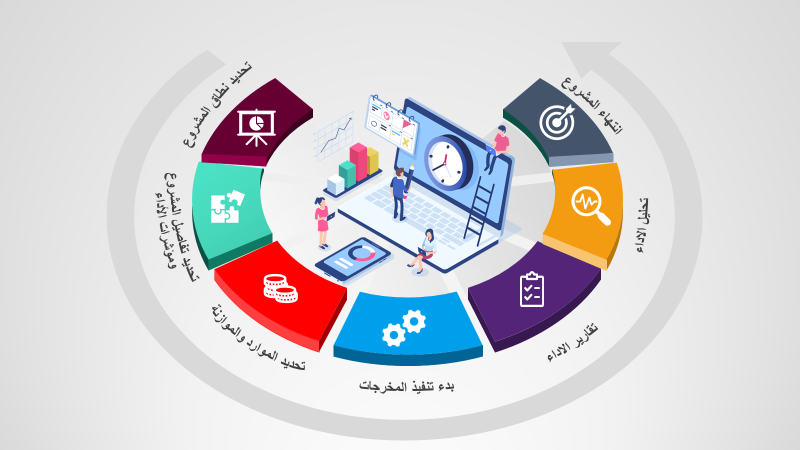
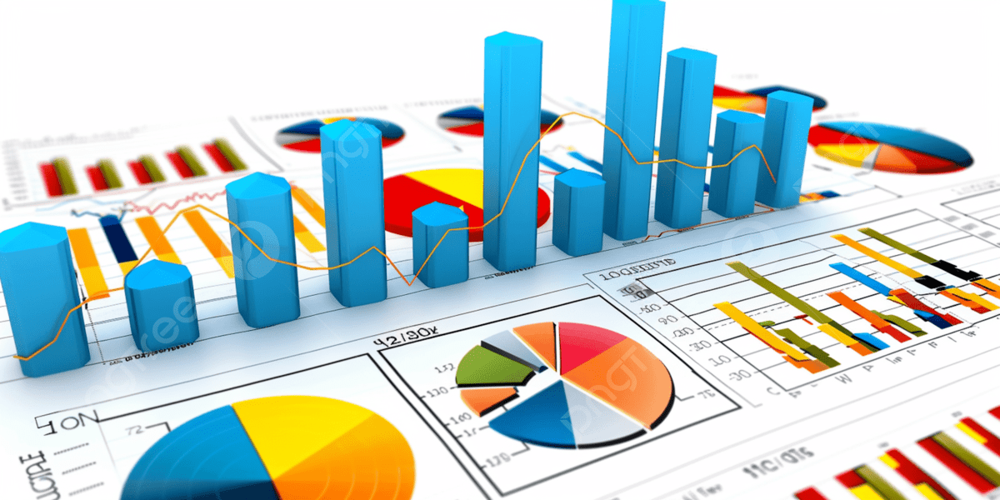

منظومة الخدمات والحلول الهندسية والبيانية
دمج بين الممارسة الهندسية الصارمة لإدارة المشاريع والمكتب الفني، مع تقنيات تحليل البيانات والأتمتة الذكية.

مسار إدارة وضبط المشروعات الإنشائية
حزمة شاملة تغطي حوكمة التكاليف، التخطيط والجدولة بـ Primavera P6، وإدارة المكتب الفني المتكاملة.

مسار تحليل البيانات والأتمتة الذكية
تحويل تدفقات بيانات المشروعات إلى لوحات معلومات داعمة للقرار وأتمتة مسارات العمل بين الميدان والإدارة.
التفاصيل الفنية للأعمدة الأربعة
التحكم في التكاليف والميزانية الصفرية
تفكيك المقايسة وتأسيس Budget Zero وربط أكواد التكلفة (CA-Codes) مع التحليل الشهري لمؤشرات القيمة المكتسبة (EVM).
استعراض المسار ➔التخطيط والبرمجة الزمنية (P6)
ورقة الربط (Mapping Sheet) لربط BOQ بـ WBS، تحميل الموارد والتكاليف، منحنيات S-Curve، وتحليل التأخيرات الزمنية.
استعراض المسار ➔المكتب الفني والشوب دروينج
إعداد وتدقيق المخططات التنفيذية، ملفات الاعتماد (Submittals)، حصر الكميات الهندسي، ومخططات As-Built للتسليم.
استعراض المسار ➔ذكاء الأعمال والأتمتة بالذكاء الاصطناعي
بناء لوحات Power BI متصلة بقواعد بيانات SQL Server، ونماذج n8n لأتمتة دورة توثيق وتقارير الموقع اليومية.
استعراض المسار ➔